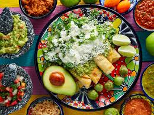
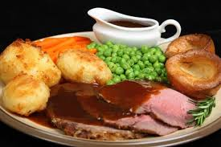
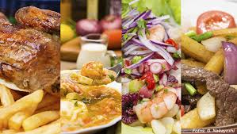
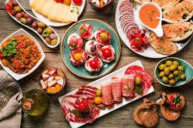
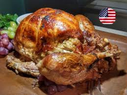

La gastronomía es el estudio de la relación entre la cultura y la comida. Incluye la práctica de cocinar, la historia de los alimentos, las técnicas culinarias, la ciencia de los ingredientes, y el conocimiento de las costumbres y tradiciones alimentarias de diferentes regiones y épocas. La gastronomía va más allá de la simple preparación de alimentos; también abarca aspectos como la presentación de los platos, la combinación de sabores y texturas, y la apreciación estética y sensorial de la comida. Además,la gastronomía puede influir en la economía, la nutrición, la salud, y la sostenibilidad ambiental. En resumen, es una disciplina amplia que toca diversos campos del conocimiento, todos ellos relacionados con el arte y la ciencia de la comida.
Introducción
La gastronomía es el estudio de la relación entre la cultura y la comida. Va mucho más allá de la simple preparación de alimentos, abarcando la historia de los alimentos, las técnicas culinarias, la ciencia de los ingredientes, y el conocimiento de las costumbres y tradiciones alimentarias de diferentes regiones y épocas. La gastronomía es una disciplina que se enriquece con las aportaciones de la antropología, la historia, la biología, la química, y la economía, entre otras ciencias.





Técnicas Culinarias
Las técnicas culinarias son fundamentales en la gastronomía. Estas incluyen métodos de cocción como hervir, asar, freír, hornear y cocinar al vapor, entre otros. Cada técnica realza diferentes sabores y texturas de los alimentos. Por ejemplo, la cocción a la parrilla puede añadir un sabor ahumado, mientras que el horneado puede proporcionar una textura crujiente por fuera y tierna por dentro. Conocer y dominar estas técnicas permite al cocinero experimentar y crear platos variados y sofisticados.
Principales Técnicas Culinarias
Hervir: Cocción de alimentos en agua u otro líquido en ebullición. Es ideal para cocinar pasta, verduras y legumbres.
Asar: Cocción de alimentos en un horno seco a temperaturas altas, proporcionando un exterior crujiente y un interior jugoso. Utilizado para carnes, aves y vegetales.
Freír: Cocción de alimentos en grasa caliente, que puede ser en sartén (freír a la sartén) o en abundante aceite (fritura profunda). Ideal para obtener una textura crujiente.
Hornear: Cocción de alimentos en un horno seco, a menudo utilizado para panes, pasteles y galletas.
Cocinar al Vapor: Cocción de alimentos utilizando el vapor generado por agua hirviendo, lo que conserva nutrientes y sabores. Comúnmente utilizado para verduras y pescados.
Saltear: Cocción rápida de alimentos en una sartén caliente con una pequeña cantidad de grasa, ideal para verduras y carnes cortadas en trozos pequeños.
Brasear: Cocción lenta de alimentos en una cantidad pequeña de líquido, después de haber sido dorados. Esta técnica se usa para carnes duras, que se vuelven tiernas y jugosas.
Guisar: Cocción lenta de alimentos en una cantidad mayor de líquido, creando un plato rico y con sabores integrados. Utilizado para sopas y estofados.
Sous-vide: Cocción de alimentos sellados al vacío a bajas temperaturas durante un periodo prolongado, proporcionando una cocción uniforme y precisa.
Esferificación: Técnica de cocina molecular que crea esferas con líquidos, proporcionando una experiencia sensorial única. Utilizada para crear "caviar" de frutas y otras esferas líquidas.
Marinar: Sumergir alimentos en una mezcla de líquidos y especias para ablandar y añadir sabor antes de cocinarlos. Utilizado comúnmente para carnes y pescados.
Escalfar: Cocción de alimentos en un líquido caliente, pero no hirviendo, generalmente agua o caldo. Ideal para huevos y pescados.
Ingredientes
El conocimiento de los ingredientes es esencial. Los ingredientes pueden ser de origen animal o vegetal, y cada uno tiene propiedades únicas que afectan el sabor, la textura y el valor nutricional de los platos. Además, la frescura y la calidad de los ingredientes son cruciales para el éxito de cualquier receta. Los chefs también deben conocer la estacionalidad de los productos, ya que utilizar ingredientes de temporada no solo garantiza mejor sabor y textura, sino que también es más sostenible y económico.
Historia y Cultura
La gastronomía también se enfoca en la historia y la cultura de la comida. Cada región del mundo tiene sus propias tradiciones culinarias, influenciadas por su historia, clima, y recursos disponibles. Por ejemplo, la cocina mediterránea se caracteriza por el uso de aceite de oliva, pescados y verduras frescas, debido a la disponibilidad de estos ingredientes en la región. En contraste, la cocina asiática puede incluir una variedad de especias y técnicas de fermentación, reflejando las tradiciones y el clima de esa parte del mundo. Entender estas influencias históricas y culturales ayuda a los cocineros a apreciar y respetar la diversidad gastronómica global.
Nutrición y Salud
Un aspecto importante de la gastronomía es la nutrición. Entender el valor nutricional de los alimentos ayuda a crear dietas balanceadas y saludables. La gastronomía también puede influir en la salud pública al promover hábitos alimenticios saludables. Por ejemplo, las dietas ricas en frutas, verduras, granos integrales y proteínas magras pueden reducir el riesgo de enfermedades crónicas como la diabetes, las enfermedades cardíacas y ciertos tipos de cáncer. Además, la forma en que se preparan los alimentos puede afectar su valor nutricional. Técnicas como el cocinado al vapor y el horneado pueden conservar más nutrientes que la fritura.
Aspectos Importantes sobre Nutrición y Salud
Macronutrientes: Incluyen carbohidratos, proteínas y grasas, que son necesarios en grandes cantidades para proporcionar energía y apoyar el crecimiento y el mantenimiento del cuerpo.
Micronutrientes: Incluyen vitaminas y minerales, necesarios en pequeñas cantidades para diversas funciones corporales, como la inmunidad y la reparación celular.
Hidratación: Mantener una adecuada ingesta de líquidos es crucial para la salud general, ya que el agua es esencial para casi todos los procesos corporales.
Dieta Balanceada: Consumir una variedad de alimentos de todos los grupos alimenticios en proporciones adecuadas para obtener todos los nutrientes necesarios.
Fibra: Importante para la salud digestiva, la fibra ayuda a mantener la regularidad intestinal y puede reducir el riesgo de enfermedades crónicas.
Grasas Saludables: Incluyen grasas monoinsaturadas y poliinsaturadas, que son beneficiosas para la salud del corazón. Se encuentran en alimentos como aguacates, nueces y pescados grasos.
Control de Porciones: Comer porciones adecuadas puede ayudar a mantener un peso saludable y prevenir el consumo excesivo de calorías.
Reducción de Azúcares y Sales: Limitar el consumo de azúcares añadidos y sal puede ayudar a prevenir enfermedades como la diabetes tipo 2, hipertensión y enfermedades cardíacas.
Actividad Física: Complementar una dieta saludable con ejercicio regular es esencial para mantener un peso saludable y promover la salud cardiovascular y muscular.
Alimentos Procesados: Minimizar el consumo de alimentos altamente procesados, que suelen ser altos en azúcares, grasas saturadas y sodio, y bajos en nutrientes esenciales.
Alergias e Intolerancias Alimentarias: Reconocer y gestionar las alergias e intolerancias alimentarias es crucial para evitar reacciones adversas y mantener la salud.
Hábitos Alimenticios Saludables: Incluir prácticas como comer despacio, escuchar las señales de hambre y saciedad, y disfrutar de las comidas en un ambiente relajado.
Planificación de Comidas: Planificar y preparar comidas saludables con anticipación puede ayudar a mantener una dieta balanceada y evitar elecciones alimenticias poco saludables.
Sostenibilidad
La sostenibilidad es otro pilar de la gastronomía moderna. Esto incluye prácticas como el uso de ingredientes locales y de temporada, y métodos de cultivo y producción que minimicen el impacto ambiental. Los chefs y los consumidores están cada vez más conscientes de la importancia de elegir alimentos que sean sostenibles y éticos. Esto incluye considerar el origen de los ingredientes, la huella de carbono de su transporte, y el bienestar animal. Además, la gastronomía sostenible también aboga por la reducción del desperdicio de alimentos, la promoción de prácticas agrícolas regenerativas, y el apoyo a los agricultores y productores locales.